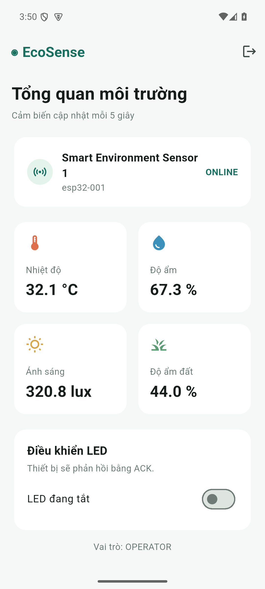

Bản nháp: Các mục cần ESP32/DHT22/LED thật và video minh chứng phải được cập nhật sau khi kiểm tra trên phần cứng.
Hệ thống giám sát môi trường gồm ESP32/DHT22/LED hoặc simulator Python, EMQX, Spring Boot, PostgreSQL, web React và Flutter. Thiết bị gửi telemetry và status qua MQTT; backend lưu dữ liệu, cung cấp REST API có JWT cho web và mobile. Lệnh LED đi từ web/mobile qua REST API, backend publish MQTT command, thiết bị thực thi rồi gửi ACK giữ nguyên commandId.
LED_ON/LED_OFF, điều khiển GPIO2 và ACK đúng commandId.--dart-define.Thiết bị dùng deviceId=esp32-001. Telemetry device/esp32-001/telemetry QoS 0; command và ACK QoS 1; status QoS 1 retained. Trường illuminance và soilMoisture gửi null khi chỉ lắp DHT22. Chi tiết và sơ đồ GPIO nằm trong README.
| Kiểm tra | Kết quả |
|---|---|
ESP-IDF 5.5.5 idf.py build cho target ESP32 |
Đạt, sinh firmware .bin |
React npm run build |
Đạt |
Flutter flutter analyze |
Đạt |
Flutter flutter build apk --debug |
Đạt, sinh app-debug.apk |
| Docker Compose và Flyway | Đạt, cả 5 container Up; Flyway áp dụng 3 migration |
| Simulator → MQTT → backend → API | Đạt, telemetry lưu mỗi 5 giây |
| LED_ON, LED_OFF và ACK | Đạt trên simulator, command chuyển ACKNOWLEDGED, LED state đúng |
| Phân quyền viewer | Đạt, POST command trả HTTP 403 |
| Web và đường dẫn lịch sử | Đạt, HTTP 200 cho / và /logs |
| Dừng/khởi động lại simulator | Đạt, trạng thái lần lượt OFFLINE và ONLINE |
| Flutter trên Android Emulator | Đạt, đăng nhập operator và đọc cùng telemetry từ API |
| Điều khiển LED từ Flutter | Đạt trên simulator, LED state đổi ON rồi OFF trong backend |
| ESP32, DHT22, LED, rút nguồn và mobile trên máy thật | Chưa kiểm chứng: chưa có board/cổng COM được kết nối |
Ảnh dưới đây là app mobile nhận dữ liệu simulator, dùng để chứng minh phần mềm hoạt động. Khi nộp bài, cần bổ sung ảnh nhận dữ liệu từ ESP32 thật.

Phần mềm bằng simulator đã kiểm tra xong. Bước tiếp theo cần phần cứng: dừng simulator, cấu hình Wi-Fi và IP broker, flash ESP32, kiểm tra dữ liệu thật trên web/mobile, điều khiển LED hai chiều và rút nguồn để xác nhận OFFLINE. Lưu ảnh màn hình web/mobile, log command ACK và video 5–7 phút theo thứ tự trong tài liệu hướng dẫn. Khi có kết quả phần cứng, cập nhật bảng ở mục 4, điền thông tin nhóm và xuất tài liệu này thành PDF để nộp.